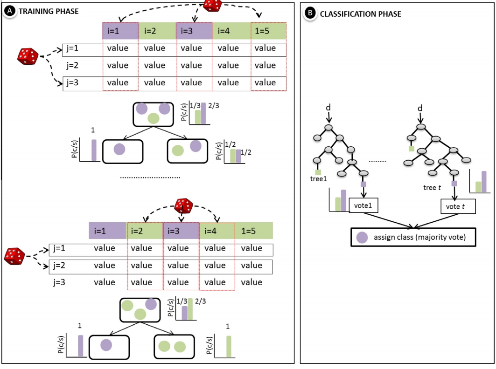

6 Week 7 Diary
7 Week 7: Classification Methods and Applications
7.1 Summary
This week’s course focuses on the key methods and principles of remote sensing classification, especially the difference between Supervised Classification and Unsupervised Classification and their application scenarios. In Supervised Classification, we mainly studied Decision Tree and Random Forest algorithms. The professor emphasised that Decision Tree has the advantage of being intuitive and easy to understand, but it is also prone to overfitting, i.e. the model may be too sensitive to the training data and difficult to generalise to new data. To solve this problem, we also learnt the Random Forest method, which not only improves classification accuracy but also effectively reduces the risk of overfitting by integrating the results of multiple decision trees.
Another highlight of the course was the introduction of Regression Tree. While most of the classification algorithms we have come across in the past are for prediction of discrete categories, Regression Tree is able to deal with continuous variables, such as the estimation of the proportion of vegetation in land cover. The professor mentioned that regression trees are similar in principle to decision trees, but use numerical variables rather than category labels in node splitting, making them ideal for more refined environmental monitoring tasks.
In terms of unsupervised classification, we instead focused on K-means clustering methods. Instead of pre-labelling the training samples, this method automatically groups pixels based on the spectral features of the data, which is particularly useful in scenarios where explicitly labelled data is lacking. However, the professor also pointed out that K-means requires manual judgement of the optimal number of categories in practical applications, which adds to the subjectivity in its use.
Through this week’s study, I further realised the importance of the choice of classification method: supervised classification is suitable for situations with sufficient training data, while unsupervised classification is suitable for exploratory analysis or scenarios with limited data. Overall, this week has given me a better understanding of how to choose the most appropriate classification tool for my actual needs.
7.2 Applications
The supervised and unsupervised classification methods I learned in this week’s course got me thinking about how I can apply them more effectively to real-world remote sensing research.
Firstly, for supervised classification, I think the Random Forest algorithm has great potential. Compared with traditional decision trees, it significantly improves classification accuracy through the voting mechanism of multiple trees and mitigates the risk of overfitting, which is especially suitable for complex remote sensing analysis of urban environments. After reviewing the relevant literature, I found that the Random Forest approach has been widely used in monitoring urban land use changes and has demonstrated extremely high accuracy. For example, one study used the Random Forest algorithm to analyse Sentinel-2 imagery and successfully identified different land use types in the process of urban expansion, which was significantly better than the classification results of a single decision tree (Belgiu and Drăguţ, 2016).

Fig. 1 Training and classification phases of Random Forest classifier
Source: Belgiu and Drăguţ (2016)
On the other hand, the introduction of regression trees also reminded me of their potential for analysing urban vegetation and environmental indicators. I found that regression trees are particularly suitable for estimating continuous environmental variables, such as the proportion of vegetation cover within a city or the distribution of urban surface temperature. In past studies, regression trees have been successfully used to quantitatively analyse urban heat island intensity from remote sensing imagery, helping urban planning authorities to accurately identify areas with temperature anomalies (Imhoff et al., 2010).

Fig. 2 Urban Heat Island Intensity and Spatial Distribution Across Different Biomes in the USA
Source: Imhoff et al. (2010)
In addition, for cases where the data lacks explicit labelling, I believe that unsupervised classification methods such as K-means clustering are equally valuable. K-means can automatically identify feature types based on spectral similarity without predefined categories. This is useful for initial exploration of new remote sensing datasets or in areas where detailed ground data are lacking. However, the number of categories for K-means needs to be determined by humans, which may introduce some subjectivity. I note that some studies have used K-means for initial classification in urban landscape analyses, which was subsequently combined with a small amount of supervised data for fine-grained corrections, resulting in more accurate classification results (Gao and Xu, 2016). This strategy of combining unsupervised and supervised classification is worth trying in depth in my future.
7.3 Reflection
This week’s study on classification methods in remote sensing has made me further appreciate the ‘art of choice’ behind the analysis of remote sensing data. Faced with the two distinct paths of supervised and unsupervised classification, I realised that the choice of classification method depends not only on the data itself, but also on the research objectives and the availability of resources. In particular, tools such as random forests and regression trees showed me the balance between accuracy and efficiency, which may play a great role in urban research in the future.
In particular, the ‘majority voting’ mechanism of random forests gave me more confidence in the robustness and accuracy of the classification results. I started to think about how to use Random Forests to handle complex remote sensing data and capture the subtle differences in urban change in topics such as urban heat island and land use change. However, I also realised that the complexity of the Random Forest model itself makes the interpretation of the results potentially difficult, so in the future I will need to learn more about how to effectively interpret and communicate the results of classification models.
The presentation of regression trees, on the other hand, made me think further about the advantages of remote sensing in quantitatively analysing continuous environmental variables. This capability is particularly suited to the estimation of metrics such as urban vegetation percentage and surface temperature.
On the other hand, unsupervised classification methods such as K-means clustering enlightened me on how to be more flexible in preliminary data exploration, especially when the data are incomplete or under-labelled. However, I also noticed that determining the optimal number of classifications is still highly subjective, which also showed me how it is important to incorporate supervised classification strategies based on unsupervised classification in order to reduce subjective bias.